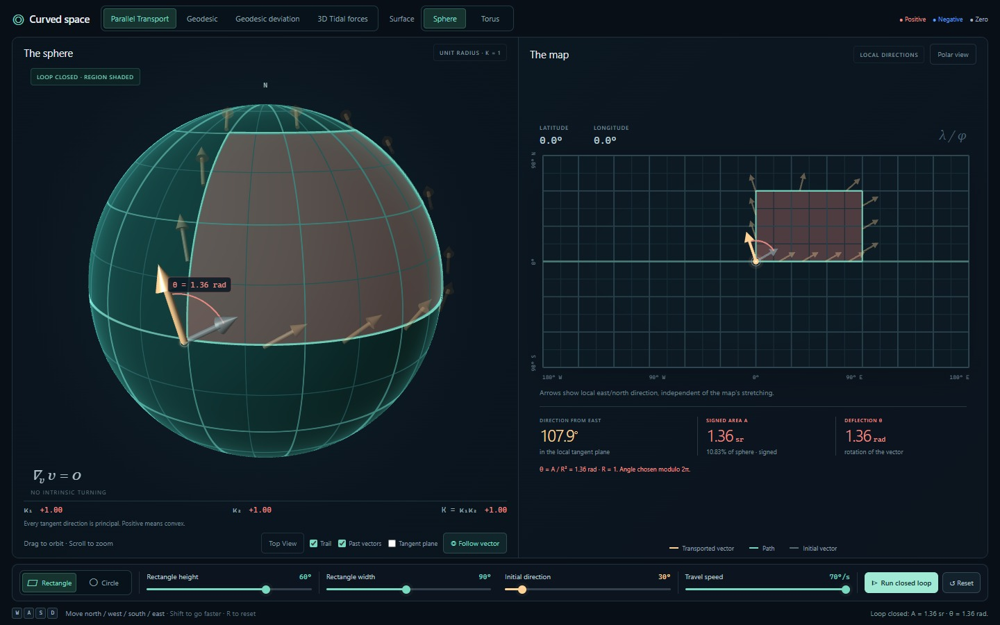
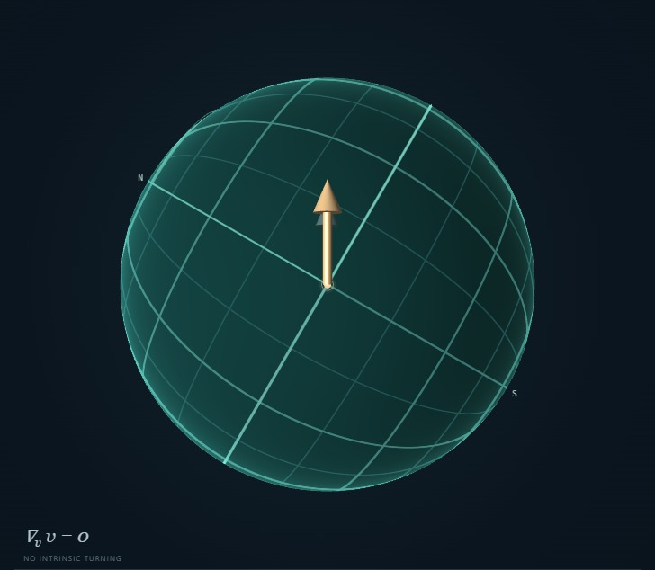
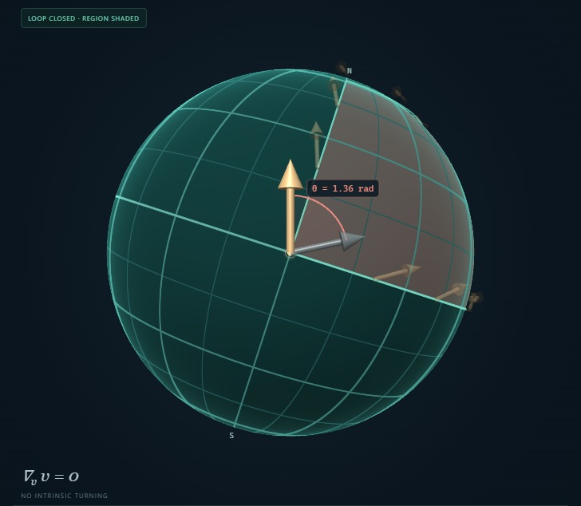
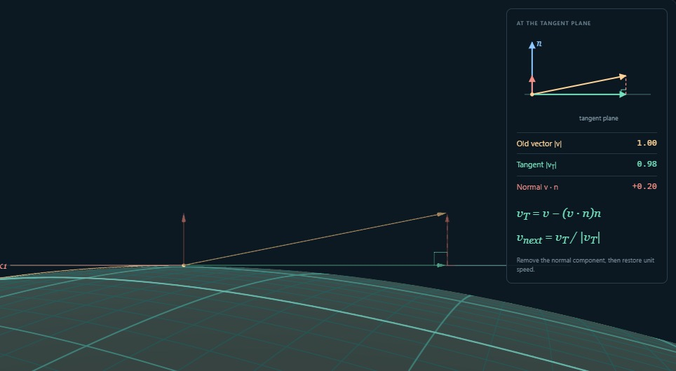
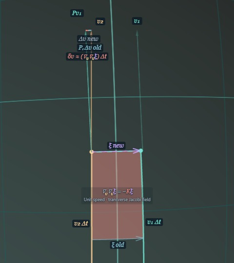
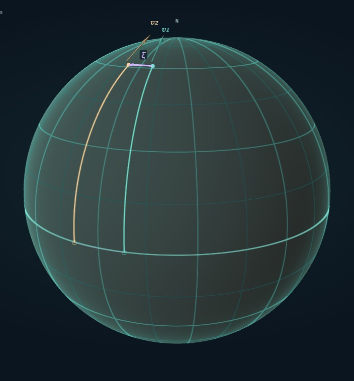
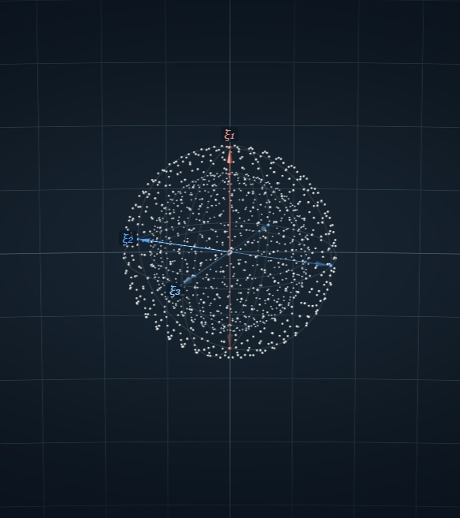
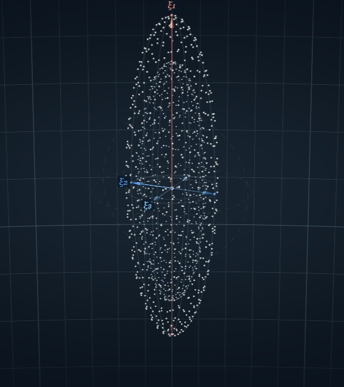

Geometry · App guide
Going straight in curved space
How can you keep an arrow pointing straight, carry it around a loop, and return with it pointing somewhere else? Curved Space lets you try this, then build geodesics and compare their motion with a cloud falling under gravity.
Open Curved Space ↗Open the app beside this guide. The four tabs select the experiments. Drag to orbit and scroll to zoom; the camera buttons sit at the lower right of the 3D view. The speed sliders change playback, not the geometry.
01Carry an arrow around a loop
In Parallel Transport, keep the sphere selected and press Run closed loop. The gold arrow stays tangent to the surface and undergoes no local turning within that plane. At the end, compare it with the pale arrow marking its original direction. The difference is holonomy.

This detects curvature intrinsically: you need only compare directions at the same starting point. For a loop bounding a patch, the angle is its integrated Gaussian curvature:
θ = ∫patch K dA (mod 2π).
On this unit sphere, K = 1, so angle in radians and area have the same numerical value. Resize the rectangle or select Circle; a larger enclosed patch gives more rotation. Reversing the traversal reverses the sign. You can also steer your own path with WASD.
Now reset, select Top View, and run again. The camera’s orientation is itself parallel transported. The gold arrow keeps pointing up while the coordinate grid turns beneath it. Only on returning does the mismatch with the original direction become visible.


The flat map reports direction relative to local east and north; that coordinate angle can change even along a geodesic. Polar view gives a clearer chart near a pole. Enable Tangent plane to see the principal curvature directions: their curvatures multiply to K. On the Torus, K is positive outside and negative inside, so the readout uses ∫K dA rather than area alone.
02Build a geodesic
Select Geodesic and leave progression on Manual. Step through Move, Resolve, and Project. After moving forward, the old velocity need not lie in the new tangent plane. The construction splits it into a tangent part and a normal part, removes the normal part, and restores unit speed.

Repeat this: move in the velocity’s direction, then parallel transport that velocity. In the small-step limit, it defines a geodesic:
∇v v = 0.
The displayed projection is a finite-step approximation. Reduce Step size to improve it, or select Automatic to watch the sequence repeat. In Top View the velocity keeps its direction relative to the transported camera. In First person you travel straight ahead, even as the coordinate grid changes direction.
03Compare two straight paths
Select Geodesic deviation. The travelers start side by side with parallel velocities. Set a small Initial separation, choose the Launch direction, then enable Deviation construction. Advance through Move and Transport v₁ → v₂.
The separation ξ points from the yellow traveler to the teal one: old ξ before the step, new ξ after it. The shaded strip lies between the two paths. To compare velocities at different points, the app transports the teal velocity to the yellow point first.
Their difference, Δv, approximates ∇vξ. Take another step: the app carries the previous difference forward and draws the extra piece δv. It is this change in the difference that approximates (∇v∇vξ) Δt. The transported vectors now share a tangent plane, so subtracting them makes sense.


For unit-speed geodesics and an infinitesimal transverse separation, the equation is
∇v∇v ξ = −Kξ.
Turn construction off, restart, and launch the continuous animation. On the unit sphere, the signed transverse separation obeys j̈ = −j: the travelers approach as though connected by a harmonic spring. There is no force between them. Each follows its own geodesic. The Jacobi prediction compares this small-separation equation with the actual finite gap; on the torus, a region of negative K instead tends to separate nearby paths.
For the covariant equation, see David Tong’s discussion of geodesic deviation.
04Newtonian Tidal Forces Hint at GR
There is something curious hidden in Newton’s gravity. To find it, let a spherical cloud of test particles fall toward a distant mass. Start the particles at rest relative to one another, and let each respond only to the mass below.
Select 3D Tidal forces, choose two Concentric shells, and press Start time. We fall with the cloud’s center as the spherical coordinate grid rises past us. The cloud stretches vertically and squeezes inward from both sides. The red arrow follows the stretching; the two blue arrows follow the compression. Drag the Time slider to examine the motion.


The distortion is easy to understand. The nearer particles feel a stronger pull, while particles side by side accelerate toward the same center. But follow the volume of a tiny shell at the start of the fall, and something more interesting appears: the stretching and squeezing balance exactly.
Writing μ = GM/r³, Newton’s law gives relative accelerations +2μξ radially and −μξ in each transverse direction. Their contributions to the initial fractional volume acceleration add up to
(V̈ / V)release = 2μ − μ − μ = 0.
The particles start with no relative motion, so V̇(0) = 0 as well. The shell’s volume is preserved through second order in time. Its shape begins to change at order t², yet its volume has no change at that order.
We could turn this observation around. Suppose we knew only that the attraction was spherically symmetric and demanded this volume balance at every radius. In three spatial dimensions, the inward acceleration f(r) would have to satisfy
f′(r) + 2f(r)/r = 0.
This says that r²f is constant, so f(r) = C/r². We recover the inverse-square law. Among nonzero spherically symmetric attractions, it is the unique radial dependence with this property. We have found another way to characterize Newton’s gravitational law: by what it does to a small falling volume.
Now recall the neighboring geodesics. Curvature also made them converge or separate. Differential geometry goes further: it has a result about exactly the volume experiment we have just performed.
The Ricci tensor is a trace of the full curvature tensor. Along a chosen observer’s motion, it sums the curvature contributions to geodesic focusing in the three transverse spatial directions. Release an infinitesimal ball of freely falling particles, initially at rest relative to one another. If u is the central observer’s four-velocity, then
(V̈ / V)release = −Ric(u, u),
with time measured by that observer’s own clock. The geometry gives us the same kind of volume test. Ric(u, u) determines the initial fractional volume acceleration; positive values mean net focusing. Here the curvature belongs to spacetime.
Newton’s volume balance now has a geometric expression: Ric(u, u) = 0. Require it for every freely falling observer, at every point in vacuum, and the Ricci tensor itself must vanish. A study of Newtonian tides has led us to a natural way to formulate gravity in differential geometry—and to Einstein’s gravitational field equations in vacuum:
Ric = 0
The curvature can still stretch and squeeze the cloud. The equation requires those effects to balance in the initial volume change. Newton’s inverse-square law had already given us the clue.
Including matter and energy
To complete the theory, we still need to determine how matter and energy enter the volume law. With Ricci on the left, Einstein’s equation reads
Rμν = (8πG/c⁴)(Tμν − ½T gμν).
Rμν is the Ricci tensor, Tμν describes energy, momentum, and stress, and T = gαβTαβ is its trace. In vacuum Tμν = 0, and this reduces to Ric = 0.
Further reading: Baez and Bunn on volume changes and the inverse-square law; Baez on Ricci curvature and the falling-ball test; Tong on Einstein’s equations.
Comments and questions
Share a thought about this post or ask a question.